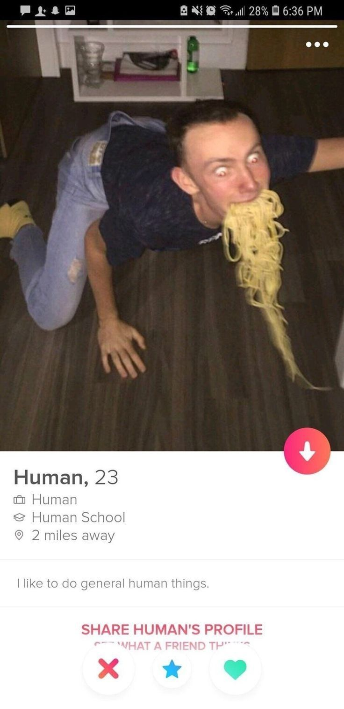
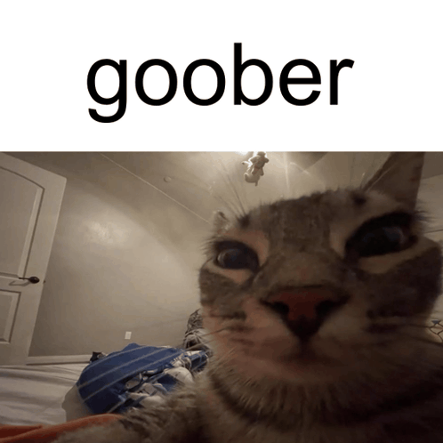
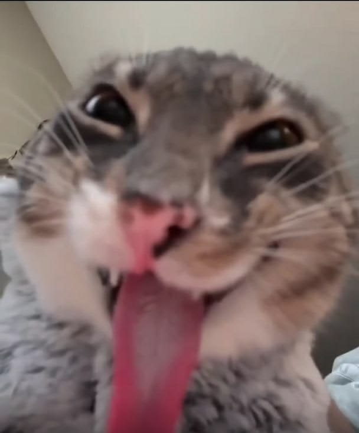
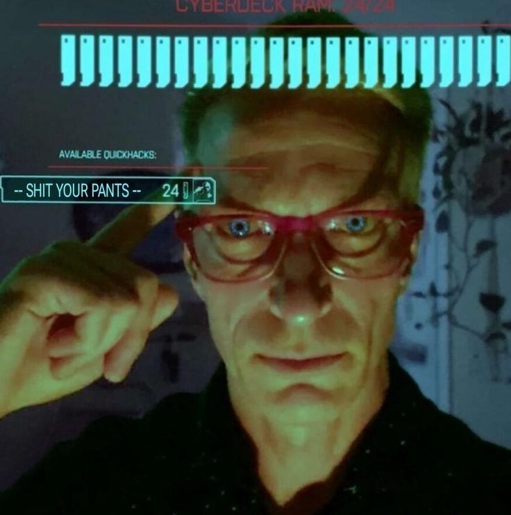
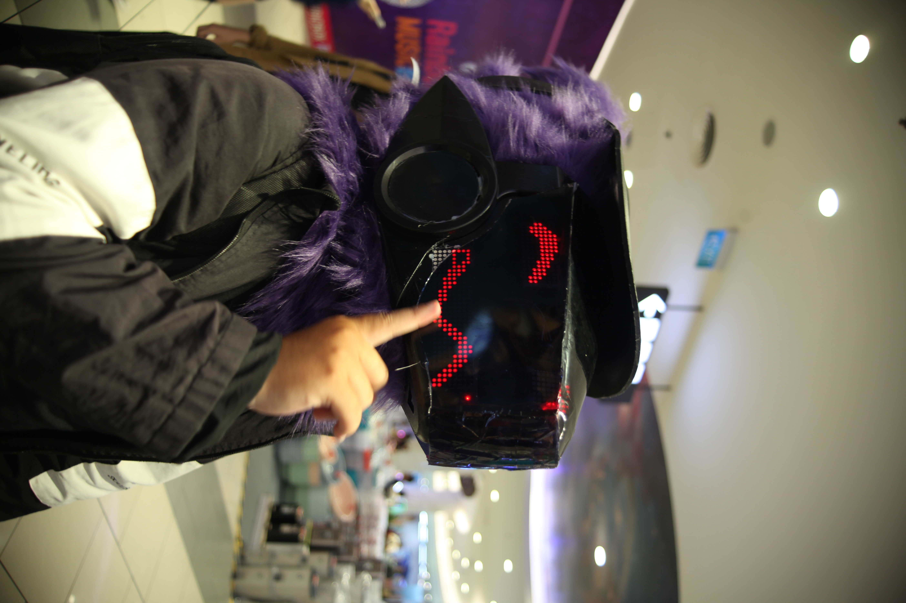
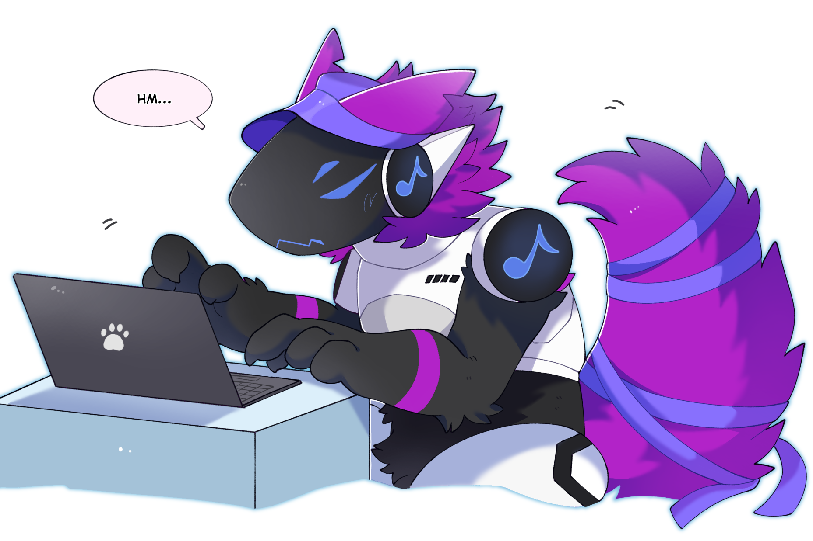
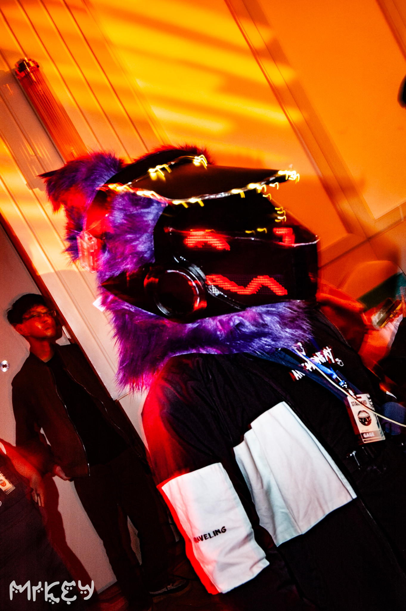

Le Thanh Ngan (GAGE)
Embedded software engineer
Vietnamese & some what fluent in English
Hello my name is Le Thanh Ngan, but you can call me GAGE.
I studied at HCMC University of Technology and Engineering,
focusing on embedded systems, firmware, and hardware.
Full time goober.




Theother GAGE
Game programmer & furry creator(kinda)
I'm the other side of GAGE.
I work at Gameloft, where I focus on game programming, especially game engine development.
I'm also interested in furry art.
Thanks for visiting! Feel free to look around and explore my work. Although this website is still under construction, I hope you enjoy what you see. If you have any questions or would like to collaborate, please don't hesitate to reach out.


